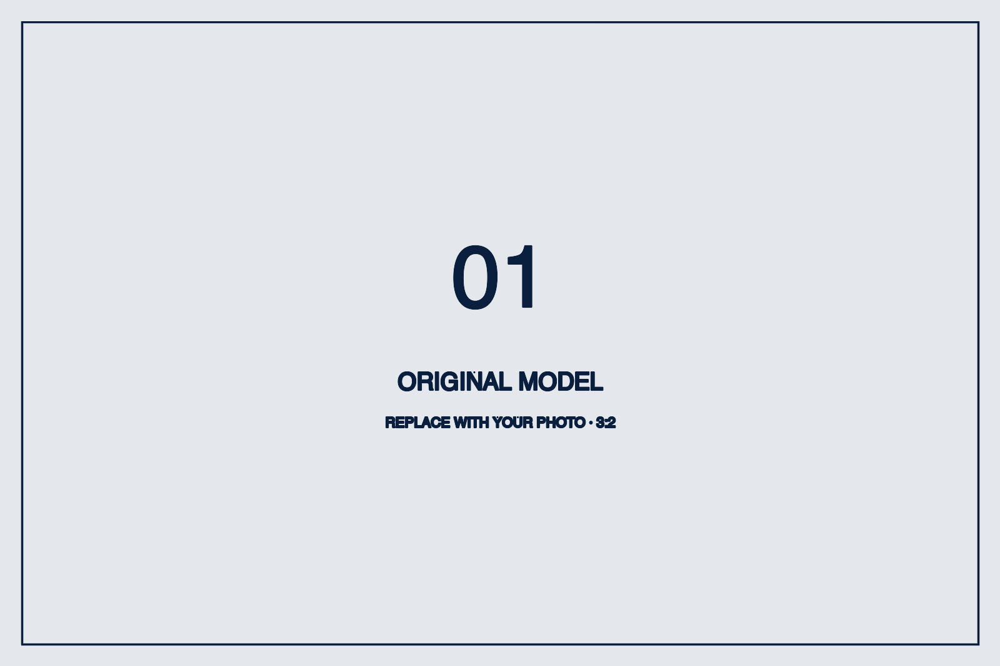
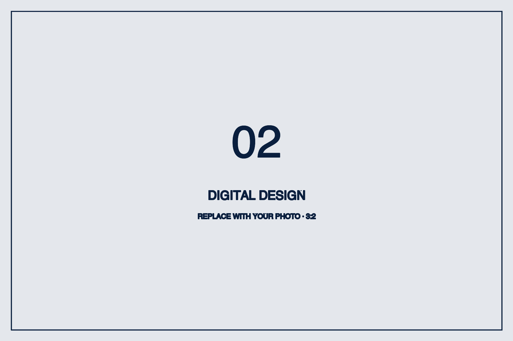
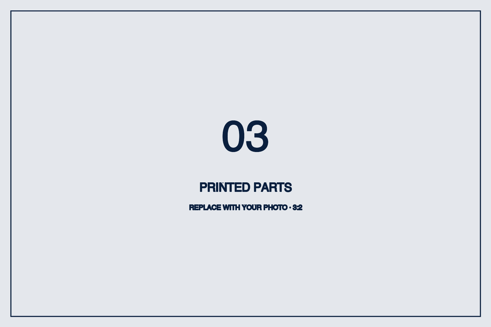
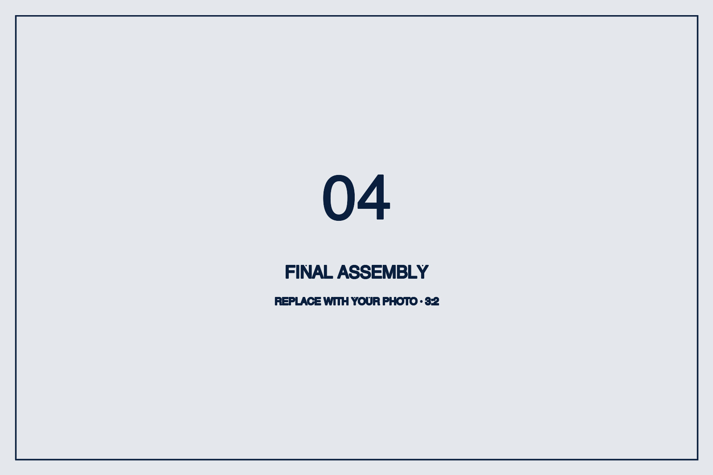

上传 STL、OBJ 或 GLB，系统自动理解模型、选择处理路线、生成机械结构与 XAtom 安装空间，最终交付可打印零件、装配预览和下载包。
生成式模型擅长外观，却通常缺少分件、关节、公差、腔体与装配关系，无法直接成为可动、可交互的打印成品。
共享编排与几何能力，同时尊重不同模型类别的结构差异。
主轴比例、横截面、端部收缩、组件分布等特征足够明确时，本地直接决策；只有模糊样本才渲染多视图并调用视觉模型。
保留生成式外观，重新构建机械结构：移除粘连轮区，建立轴管、固定贯穿轴、独立轮与轴帽，并在车尾生成 XAtom 舱。
系统在模型背部寻找安全连续曲面，生成内部腔体和贴合原始表面的独立盖板；收音孔与接口孔由配置化负体定义。
前端把分类、选项、进度、预览与下载组织成连续任务体验。用户不需要理解 Blender、布尔算法或坐标变换。




Mission 11 正在建立从数字外观到真实制造之间的自动化桥梁。